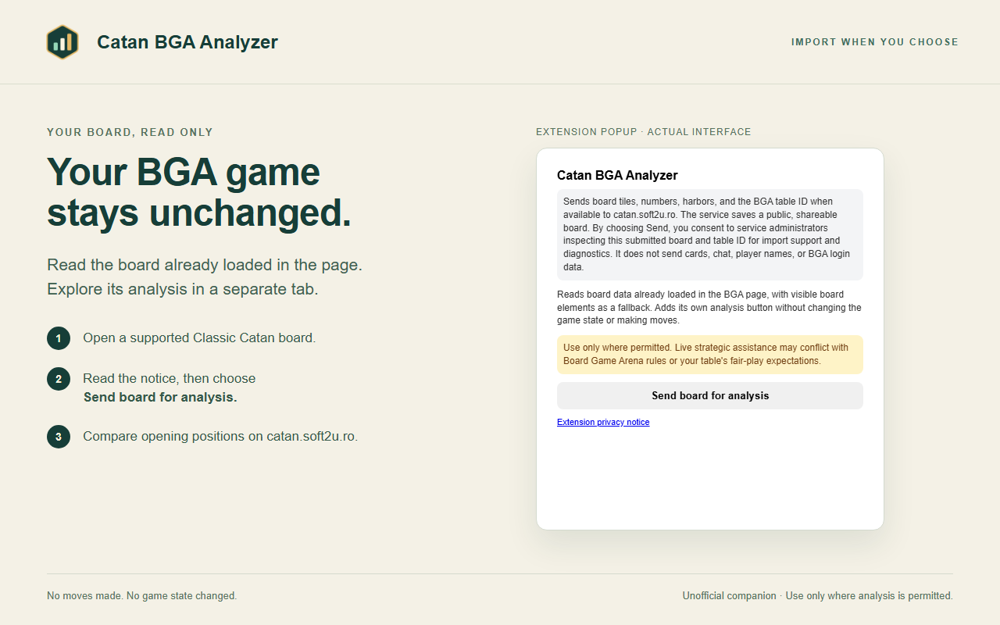

Ready for the publisher's final checks
Your store submission,
prepared locally.
The extension package, listing copy, privacy notes, and images are gathered here. Start with the release ZIP, then complete the owner-controlled steps in the Chrome Web Store dashboard.
Prepared locally · Not submitted to the store
01
The file for the package upload
Upload only the release ZIP below in the dashboard's extension package field.
CHROME EXTENSION PACKAGE
Release ZIP · v0.2.2
catan-bga-analyzer-v0.2.2.zip
Contains the manifest, bundled extension code, and four icon sizes. Listing documents and store artwork are deliberately excluded.
Download the upload ZIP20 automated tests passedJavaScript and manifest checkedRuntime ZIP and icon paths verified
02
Copy the listing text
These fields follow listing-en.md and privacy-declarations.md. Use the current dashboard's matching fields and review before saving.
Matches the extension manifest.
Matches the extension manifest.
The original BGA game is unchanged; the extension adds its own floating control. No claim of BGA or CATAN endorsement.
Copy buttons work offline. If clipboard access is unavailable, the text is selected for manual copying.
03
Store images, ready to review
Open each full-size image before uploading it to the corresponding image field. Images belong to the listing, not the runtime ZIP.


The current dashboard determines which image fields are required. Keep the original PNG dimensions and review the images for private information before submission.
04
Finish the publisher checks
The package is prepared. Account details, accurate declarations, and the final authenticated BGA check still need the publisher's attention.
Still pending before submission
- Publisher account and terms. Confirm the account, identity/contact details, any requested trader status, distribution choices, and applicable developer terms.
- Privacy and data declarations. Confirm real server practices, publish the reviewed privacy policy, and make accurate dashboard declarations. Do not claim that no data is collected.
- Authenticated BGA check. Load the extracted final ZIP and verify a fresh, permitted import through both controls. Confirm the board/game state stays unchanged and the optional source-table ID is correct.
- Reviewer access. Supply a working, authorized tutorial or replay URL and access instructions. Put any necessary test credentials only in the private dashboard field.
- Review the draft. Inspect the listing, images, privacy fields, and publishing preference before choosing to submit.
No store submission has been made.This local kit does not create a publisher account, accept terms, certify data practices, or submit a store item. The final authenticated BGA import check remains pending. Google decides review and publication; approval and timing are not guaranteed.